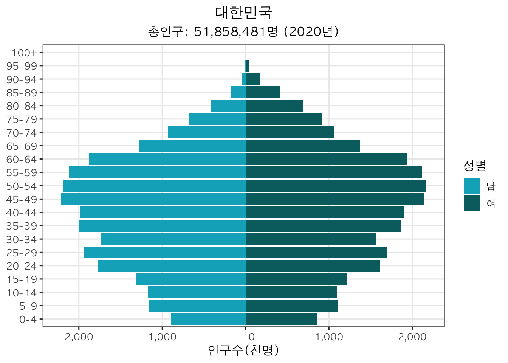
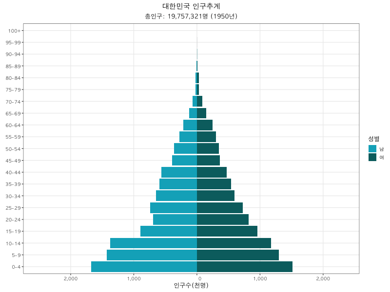
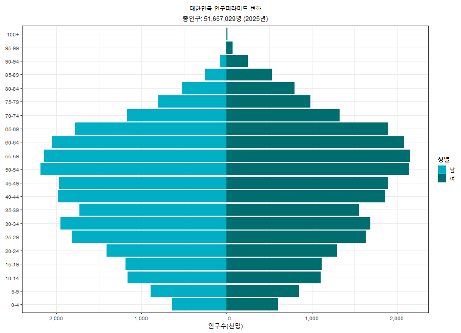

install.packages(
c(
"tidyverse",
"wpp2024",
"gganimate",
"gifski"
)
)Week 1 Demographic Changes and Global Health
Part 1: Lecture Slide
You can download the lecture slide here: Week1_Lecture_Slide
Part 2: Practice: Population Pyramid
1. Objectives
By the end of this lecture, students will be able to:
1. Understand the basic structure of a population pyramid.
2. Use UN World Population Prospects 2024 data in R.
3. Create a single-year population pyramid using 5-year age-group population data.
2. Install and Load packages
If you are running this code for the first time, install the required packages.
We now load the required packages for data wrangling, visualization, and animation.
library(tidyverse)
library(wpp2024)
library(gganimate)
library(gifski)3. Load WPP 2024 data
The `wpp2024` package contains population, fertility, mortality, and projection datasets from the UN World Population Prospects 2024.
data(package = "wpp2024")4. Single-year population pyramid
For this practice, we use `popAge5dt`, which provides population data by 5-year age group and sex. We can also check which countries are included in the dataset.
In this section, we create a population pyramid for the Republic of Korea in 2020.
data(popAge5dt)
head(popAge5dt) country_code name year age popM popF pop
<int> <char> <int> <char> <num> <num> <num>
1: 900 World 1950 0-4 175212.27 168140.83 343353.1
2: 900 World 1950 5-9 136286.96 130553.02 266840.0
3: 900 World 1950 10-14 131652.27 125887.04 257539.3
4: 900 World 1950 15-19 120363.69 116452.18 236815.9
5: 900 World 1950 20-24 111116.78 108949.85 220066.6
6: 900 World 1950 25-29 95827.98 97459.12 193287.1unique(popAge5dt$name) [1] "World"
[2] "Sub-Saharan Africa"
[3] "Northern Africa and Western Asia"
[4] "Central and Southern Asia"
[5] "Eastern and South-Eastern Asia"
[6] "Latin America and the Caribbean"
[7] "Oceania (excluding Australia and New Zealand)"
[8] "Australia/New Zealand"
[9] "Europe and Northern America"
[10] "Europe, Northern America, Australia, and New Zealand"
[11] "More developed regions"
[12] "Less developed regions"
[13] "Least developed countries"
[14] "Less developed regions, excluding least developed countries"
[15] "Less developed regions, excluding China"
[16] "Land-locked Developing Countries (LLDC)"
[17] "LLDC: Africa"
[18] "LLDC: Asia"
[19] "LLDC: Europe"
[20] "LLDC: Latin America"
[21] "Small Island Developing States (SIDS)"
[22] "SIDS Caribbean"
[23] "SIDS Pacific"
[24] "SIDS Atlantic, Indian Ocean and South China Sea (AIS)"
[25] "High-and-upper-middle-income countries"
[26] "Low-and-Lower-middle-income countries"
[27] "High-income countries"
[28] "Low-and-middle-income countries"
[29] "Middle-income countries"
[30] "Upper-middle-income countries"
[31] "Lower-middle-income countries"
[32] "Low-income countries"
[33] "No income group available"
[34] "Africa"
[35] "Eastern Africa"
[36] "Burundi"
[37] "Comoros"
[38] "Djibouti"
[39] "Eritrea"
[40] "Ethiopia"
[41] "Kenya"
[42] "Madagascar"
[43] "Malawi"
[44] "Mauritius"
[45] "Mayotte"
[46] "Mozambique"
[47] "Reunion"
[48] "Rwanda"
[49] "Seychelles"
[50] "Somalia"
[51] "South Sudan"
[52] "Uganda"
[53] "United Republic of Tanzania"
[54] "Zambia"
[55] "Zimbabwe"
[56] "Middle Africa"
[57] "Angola"
[58] "Cameroon"
[59] "Central African Republic"
[60] "Chad"
[61] "Congo"
[62] "Democratic Republic of the Congo"
[63] "Equatorial Guinea"
[64] "Gabon"
[65] "Sao Tome and Principe"
[66] "Northern Africa"
[67] "Algeria"
[68] "Egypt"
[69] "Libya"
[70] "Morocco"
[71] "Sudan"
[72] "Tunisia"
[73] "Western Sahara"
[74] "Southern Africa"
[75] "Botswana"
[76] "Eswatini"
[77] "Lesotho"
[78] "Namibia"
[79] "South Africa"
[80] "Western Africa"
[81] "Benin"
[82] "Burkina Faso"
[83] "Cabo Verde"
[84] "Cote d'Ivoire"
[85] "Gambia"
[86] "Ghana"
[87] "Guinea"
[88] "Guinea-Bissau"
[89] "Liberia"
[90] "Mali"
[91] "Mauritania"
[92] "Niger"
[93] "Nigeria"
[94] "Saint Helena"
[95] "Senegal"
[96] "Sierra Leone"
[97] "Togo"
[98] "Asia"
[99] "Central Asia"
[100] "Kazakhstan"
[101] "Kyrgyzstan"
[102] "Tajikistan"
[103] "Turkmenistan"
[104] "Uzbekistan"
[105] "Eastern Asia"
[106] "China"
[107] "China, Hong Kong SAR"
[108] "China, Macao SAR"
[109] "China, Taiwan Province of China"
[110] "Dem. People's Republic of Korea"
[111] "Japan"
[112] "Mongolia"
[113] "Republic of Korea"
[114] "Southern Asia"
[115] "Afghanistan"
[116] "Bangladesh"
[117] "Bhutan"
[118] "India"
[119] "Iran (Islamic Republic of)"
[120] "Maldives"
[121] "Nepal"
[122] "Pakistan"
[123] "Sri Lanka"
[124] "South-Eastern Asia"
[125] "Brunei Darussalam"
[126] "Cambodia"
[127] "Indonesia"
[128] "Lao People's Democratic Republic"
[129] "Malaysia"
[130] "Myanmar"
[131] "Philippines"
[132] "Singapore"
[133] "Thailand"
[134] "Timor-Leste"
[135] "Viet Nam"
[136] "Western Asia"
[137] "Armenia"
[138] "Azerbaijan"
[139] "Bahrain"
[140] "Cyprus"
[141] "Georgia"
[142] "Iraq"
[143] "Israel"
[144] "Jordan"
[145] "Kuwait"
[146] "Lebanon"
[147] "Oman"
[148] "Qatar"
[149] "Saudi Arabia"
[150] "State of Palestine"
[151] "Syrian Arab Republic"
[152] "Turkiye"
[153] "United Arab Emirates"
[154] "Yemen"
[155] "Europe"
[156] "Eastern Europe"
[157] "Belarus"
[158] "Bulgaria"
[159] "Czechia"
[160] "Hungary"
[161] "Poland"
[162] "Republic of Moldova"
[163] "Romania"
[164] "Russian Federation"
[165] "Slovakia"
[166] "Ukraine"
[167] "Northern Europe"
[168] "Denmark"
[169] "Estonia"
[170] "Faroe Islands"
[171] "Finland"
[172] "Guernsey"
[173] "Iceland"
[174] "Ireland"
[175] "Isle of Man"
[176] "Jersey"
[177] "Latvia"
[178] "Lithuania"
[179] "Norway"
[180] "Sweden"
[181] "United Kingdom"
[182] "Southern Europe"
[183] "Albania"
[184] "Andorra"
[185] "Bosnia and Herzegovina"
[186] "Croatia"
[187] "Gibraltar"
[188] "Greece"
[189] "Italy"
[190] "Kosovo (under UNSC res. 1244)"
[191] "Malta"
[192] "Montenegro"
[193] "North Macedonia"
[194] "Portugal"
[195] "San Marino"
[196] "Serbia"
[197] "Slovenia"
[198] "Spain"
[199] "Western Europe"
[200] "Austria"
[201] "Belgium"
[202] "France"
[203] "Germany"
[204] "Liechtenstein"
[205] "Luxembourg"
[206] "Monaco"
[207] "Netherlands"
[208] "Switzerland"
[209] "Americas"
[210] "Caribbean"
[211] "Anguilla"
[212] "Antigua and Barbuda"
[213] "Aruba"
[214] "Bahamas"
[215] "Barbados"
[216] "Bonaire, Sint Eustatius and Saba"
[217] "British Virgin Islands"
[218] "Cayman Islands"
[219] "Cuba"
[220] "Curacao"
[221] "Dominica"
[222] "Dominican Republic"
[223] "Grenada"
[224] "Guadeloupe"
[225] "Haiti"
[226] "Jamaica"
[227] "Martinique"
[228] "Montserrat"
[229] "Puerto Rico"
[230] "Saint-Barthelemy"
[231] "Saint Kitts and Nevis"
[232] "Saint Lucia"
[233] "Saint Martin (French part)"
[234] "Saint Vincent and the Grenadines"
[235] "Sint Maarten (Dutch part)"
[236] "Trinidad and Tobago"
[237] "Turks and Caicos Islands"
[238] "United States Virgin Islands"
[239] "Central America"
[240] "Belize"
[241] "Costa Rica"
[242] "El Salvador"
[243] "Guatemala"
[244] "Honduras"
[245] "Mexico"
[246] "Nicaragua"
[247] "Panama"
[248] "South America"
[249] "Argentina"
[250] "Bolivia (Plurinational State of)"
[251] "Brazil"
[252] "Chile"
[253] "Colombia"
[254] "Ecuador"
[255] "Falkland Islands (Malvinas)"
[256] "French Guiana"
[257] "Guyana"
[258] "Paraguay"
[259] "Peru"
[260] "Suriname"
[261] "Uruguay"
[262] "Venezuela (Bolivarian Republic of)"
[263] "Northern America"
[264] "Bermuda"
[265] "Canada"
[266] "Greenland"
[267] "Saint Pierre and Miquelon"
[268] "United States of America"
[269] "Oceania"
[270] "Australia"
[271] "New Zealand"
[272] "Melanesia"
[273] "Fiji"
[274] "New Caledonia"
[275] "Papua New Guinea"
[276] "Solomon Islands"
[277] "Vanuatu"
[278] "Micronesia"
[279] "Guam"
[280] "Kiribati"
[281] "Marshall Islands"
[282] "Micronesia (Fed. States of)"
[283] "Nauru"
[284] "Northern Mariana Islands"
[285] "Palau"
[286] "Polynesia"
[287] "American Samoa"
[288] "Cook Islands"
[289] "French Polynesia"
[290] "Niue"
[291] "Samoa"
[292] "Tokelau"
[293] "Tonga"
[294] "Tuvalu"
[295] "Wallis and Futuna Islands" country_name <- "Republic of Korea"
target_year <- 2020The original dataset has separate columns for male and female populations.
We reshape the data into a long format and create a new variable, `plot_pop`, so that male population values are shown on the left side of the pyramid.
pyramid_data <- popAge5dt %>%
filter(name == country_name, year == target_year) %>%
select(year, age, popM, popF) %>%
pivot_longer(
cols = c(popM, popF),
names_to = "sex",
values_to = "population"
) %>%
mutate(
sex = case_when(
sex == "popM" ~ "남",
sex == "popF" ~ "여"
),
age = factor(age, levels = unique(age)),
plot_pop = ifelse(sex == "남", -population, population)
)
head(pyramid_data)# A tibble: 6 × 5
year age sex population plot_pop
<int> <fct> <chr> <dbl> <dbl>
1 2020 0-4 남 897. -897.
2 2020 0-4 여 851. 851.
3 2020 5-9 남 1164. -1164.
4 2020 5-9 여 1105. 1105.
5 2020 10-14 남 1168. -1168.
6 2020 10-14 여 1097. 1097.total_pop <- sum(pyramid_data$population) * 1000The total population is calculated by adding male and female populations across all age groups.
Because WPP population values are given in thousands, we multiply the sum by 1,000.
total_pop <- sum(pyramid_data$population) * 1000
total_pop[1] 51858481We now create the population pyramid using `ggplot2`.
ggplot(
pyramid_data,
aes(x = age, y = plot_pop, fill = sex)
) +
geom_col(width = 0.9) +
coord_flip() +
scale_y_continuous(
labels = function(x) format(abs(x), big.mark = ",")
) +
scale_fill_manual(
name = "성별",
values = c(
"남" = "#00AFC4",
"여" = "#006D6F"
)
) +
labs(
title = "대한민국",
subtitle = paste0(
"총인구: ",
format(round(total_pop), big.mark = ","),
"명 (",
target_year,
"년)"
),
x = NULL,
y = "인구수(천명)"
) +
theme_bw(base_size = 12, base_family = "AppleGothic") +
theme(
text = element_text(family = "AppleGothic"),
plot.title = element_text(hjust = 0.5, face = "bold"),
plot.subtitle = element_text(hjust = 0.5, face = "bold"),
legend.title = element_text(face = "bold"),
legend.position = "right",
panel.grid.minor = element_blank()
)
5. Historical population pyramid animation: 1950–2020
Now we extend the single-year population pyramid into an animated visualization to observe historical demographic changes in Korea from 1950 to 2020.
Step 1. Select historical years and prepare data
target_years <- seq(1950, 2020, by = 5)
historical_data <- popAge5dt %>%
filter(
name == country_name,
year %in% target_years
) %>%
select(year, age, popM, popF) %>%
pivot_longer(
cols = c(popM, popF),
names_to = "sex",
values_to = "population"
) %>%
mutate(
sex = case_when(
sex == "popM" ~ "남",
sex == "popF" ~ "여"
),
age = factor(age, levels = unique(age)),
plot_pop = ifelse(
sex == "남",
-population,
population
)
)
head(historical_data)# A tibble: 6 × 5
year age sex population plot_pop
<int> <fct> <chr> <dbl> <dbl>
1 1950 0-4 남 1676. -1676.
2 1950 0-4 여 1514. 1514.
3 1950 5-9 남 1425. -1425.
4 1950 5-9 여 1302. 1302.
5 1950 10-14 남 1375. -1375.
6 1950 10-14 여 1175. 1175.Step 2. Create total population labels for each year
For animation, we create labels showing total population for each historical year.
total_pop_by_year <- historical_data %>%
group_by(year) %>%
summarise(
total_pop = sum(population) * 1000,
.groups = "drop"
) %>%
mutate(
frame_label = paste0(
format(round(total_pop), big.mark = ","),
"명 (",
year,
"년)"
)
)
historical_data <- historical_data %>%
left_join(total_pop_by_year, by = "year") %>%
mutate(
frame_label = factor(
frame_label,
levels = total_pop_by_year$frame_label
)
)
head(total_pop_by_year)# A tibble: 6 × 3
year total_pop frame_label
<int> <dbl> <chr>
1 1950 19757321 19,757,321명 (1950년)
2 1955 22125103 22,125,103명 (1955년)
3 1960 26115379 26,115,379명 (1960년)
4 1965 29284335 29,284,335명 (1965년)
5 1970 32542192 32,542,192명 (1970년)
6 1975 35875743 35,875,743명 (1975년)head(historical_data)# A tibble: 6 × 7
year age sex population plot_pop total_pop frame_label
<int> <fct> <chr> <dbl> <dbl> <dbl> <fct>
1 1950 0-4 남 1676. -1676. 19757321 19,757,321명 (1950년)
2 1950 0-4 여 1514. 1514. 19757321 19,757,321명 (1950년)
3 1950 5-9 남 1425. -1425. 19757321 19,757,321명 (1950년)
4 1950 5-9 여 1302. 1302. 19757321 19,757,321명 (1950년)
5 1950 10-14 남 1375. -1375. 19757321 19,757,321명 (1950년)
6 1950 10-14 여 1175. 1175. 19757321 19,757,321명 (1950년)Step 3. Create animated population pyramid
p_historical <- ggplot(
historical_data,
aes(
x = age,
y = plot_pop,
fill = sex
)
) +
geom_col(width = 0.9) +
coord_flip() +
scale_y_continuous(
labels = function(x)
format(abs(x), big.mark = ",")
) +
scale_fill_manual(
name = "Sex",
values = c(
"남" = "#00AFC4",
"여" = "#006D6F"
)
) +
labs(
title = "Republic of Korea",
subtitle = "Total population: {current_frame}",
x = NULL,
y = "Population (thousands)"
) +
theme_bw(base_size = 12) +
theme(
text = element_text(family = "AppleGothic"),
plot.title = element_text(
hjust = 0.5,
face = "bold"
),
plot.subtitle = element_text(
hjust = 0.5,
face = "bold"
),
legend.title = element_text(face = "bold"),
legend.position = "right",
panel.grid.minor = element_blank()
) +
transition_manual(frame_label)Step 4. Render animation
animate(
p_historical,
nframes = 120,
fps = 20,
width = 900,
height = 650,
end_pause = 30,
renderer = gifski_renderer(
"../figure/korea_population_pyramid.gif"
)
)
6. Future population pyramid animation: 2025–2100
In this section, we use the projected population data from WPP 2024 to visualize future changes in Korea’s population structure from 2025 to 2100.
Step 1. Load projected population data
data(popprojAge5dt)
head(popprojAge5dt) country_code name year age popM popF pop popM_low
<int> <char> <char> <char> <num> <num> <num> <num>
1: 900 World 2025 0-4 329737.8 313824.3 643562.1 318518.7
2: 900 World 2025 5-9 348106.7 328944.7 677051.4 348106.7
3: 900 World 2025 10-14 354695.2 333003.6 687698.8 354695.2
4: 900 World 2025 15-19 340081.4 319018.6 659100.1 340081.4
5: 900 World 2025 20-24 321369.8 302680.5 624050.3 321369.8
6: 900 World 2025 25-29 309983.9 292348.2 602332.1 309983.9
popM_high popF_low popF_high pop_low pop_high
<num> <num> <num> <num> <num>
1: 340956.3 303222.6 324425.6 621741.3 665381.9
2: 348106.7 328944.7 328944.7 677051.4 677051.4
3: 354695.2 333003.6 333003.6 687698.8 687698.8
4: 340081.4 319018.6 319018.6 659100.1 659100.1
5: 321369.8 302680.5 302680.5 624050.3 624050.3
6: 309983.9 292348.2 292348.2 602332.1 602332.1country_name <- "Republic of Korea"
target_years <- seq(2025, 2100, by = 5)Step 2. Prepare projection data
projection_data <- popprojAge5dt %>%
filter(
name == country_name,
year %in% target_years
) %>%
select(year, age, popM, popF) %>%
pivot_longer(
cols = c(popM, popF),
names_to = "sex",
values_to = "population"
) %>%
mutate(
sex = case_when(
sex == "popM" ~ "남",
sex == "popF" ~ "여"
),
age = factor(age, levels = unique(age)),
plot_pop = ifelse(
sex == "남",
-population,
population
)
)
head(projection_data)# A tibble: 6 × 5
year age sex population plot_pop
<chr> <fct> <chr> <dbl> <dbl>
1 2025 0-4 남 641. -641.
2 2025 0-4 여 608. 608.
3 2025 5-9 남 897. -897.
4 2025 5-9 여 853. 853.
5 2025 10-14 남 1166. -1166.
6 2025 10-14 여 1108. 1108.Step 2. Create total population labels for each year
For animation, we create labels showing total population for each historical year.
total_pop_by_year_projection <- projection_data %>%
group_by(year) %>%
summarise(
total_pop = sum(population) * 1000,
.groups = "drop"
) %>%
mutate(
frame_label = paste0(
format(round(total_pop), big.mark = ","),
"명 (",
year,
"년)"
)
)
projection_data <- projection_data %>%
left_join(
total_pop_by_year_projection,
by = "year"
) %>%
mutate(
frame_label = factor(
frame_label,
levels = total_pop_by_year_projection$frame_label
)
)
head(total_pop_by_year_projection)# A tibble: 6 × 3
year total_pop frame_label
<chr> <dbl> <chr>
1 2025 51667029 51,667,029명 (2025년)
2 2030 51188586 51,188,586명 (2030년)
3 2035 50300733 50,300,733명 (2035년)
4 2040 48948688 48,948,688명 (2040년)
5 2045 47232958 47,232,958명 (2045년)
6 2050 45143136 45,143,136명 (2050년)head(projection_data)# A tibble: 6 × 7
year age sex population plot_pop total_pop frame_label
<chr> <fct> <chr> <dbl> <dbl> <dbl> <fct>
1 2025 0-4 남 641. -641. 51667029 51,667,029명 (2025년)
2 2025 0-4 여 608. 608. 51667029 51,667,029명 (2025년)
3 2025 5-9 남 897. -897. 51667029 51,667,029명 (2025년)
4 2025 5-9 여 853. 853. 51667029 51,667,029명 (2025년)
5 2025 10-14 남 1166. -1166. 51667029 51,667,029명 (2025년)
6 2025 10-14 여 1108. 1108. 51667029 51,667,029명 (2025년)Step 3. Create animated population pyramid
p_projection <- ggplot(
projection_data,
aes(
x = age,
y = plot_pop,
fill = sex
)
) +
geom_col(width = 0.9) +
coord_flip() +
scale_y_continuous(
labels = function(x)
format(abs(x), big.mark = ",")
) +
scale_fill_manual(
name = "Sex",
values = c(
"남" = "#00AFC4",
"여" = "#006D6F"
)
) +
labs(
title = "Republic of Korea: Future Population Pyramid",
subtitle = "Total population: {current_frame}",
x = NULL,
y = "Population (thousands)"
) +
theme_bw(base_size = 12, base_family = "AppleGothic") +
theme(
text = element_text(family = "AppleGothic"),
plot.title = element_text(
hjust = 0.5,
face = "bold"
),
plot.subtitle = element_text(
hjust = 0.5,
face = "bold"
),
legend.title = element_text(face = "bold"),
legend.position = "right",
panel.grid.minor = element_blank()
) +
transition_manual(frame_label)Step 4. Render animation
animate(
p_projection,
nframes = 180,
fps = 20,
width = 900,
height = 650,
end_pause = 40,
renderer = gifski_renderer(
"../figure/korea_population_pyramid_2025_2100.gif"
)
)
7. Interpretation (South Korea)
- 현재 인구구조 (2020): 아동-청년 인구는 적고 중·고령층 비중이 높은 고령사회 구조를 보이고 있음.
- 출산 변화: 1950-70년대에는 삼각형 인구 구조였지만, 1980년대 부터 아동 연령층이 좁아지는 빠른 출산 감소를 보임.
- 생존력: 과거엔 연령이 증가할 수록 피라미드가 쪼그라드는 수명이 짧았으나, 현재는 고령까지 생존을 하는 것으로 보임.
- 고령화: 출산 감소와 기대수명 증가가 동시에 진행되면서 빠른 속도로 고령화가 진행 중임
- 미래 인구구조와 건강: 인구 감소와 초고령화가 심화되며, 노인의 건강과 돌봄 문제가 중요해질 것임
8. 실습
- 미국 / 2. 영국 / 3. 베트남 / 4. 키르기즈공화국 / 5. 에티오피아
- 2020년도의 인구피라미드 / 1950-20의 인구피라미드 변화 / 2025-인구피라미드 변화
- 현재 인구구조 / 출산변화 / 생존력 / 고령화 / 미래인구구조 에 대한 한줄 요약